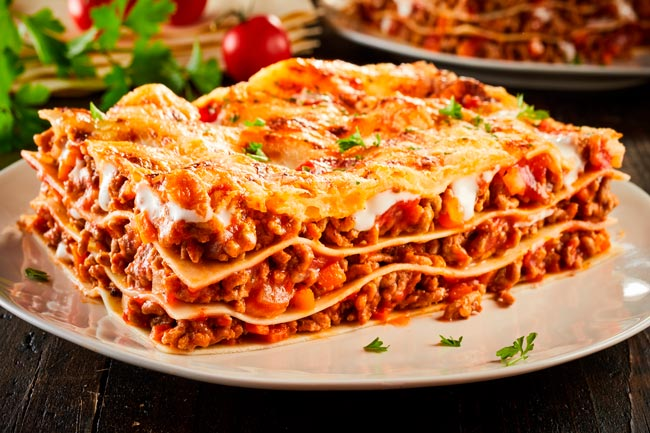
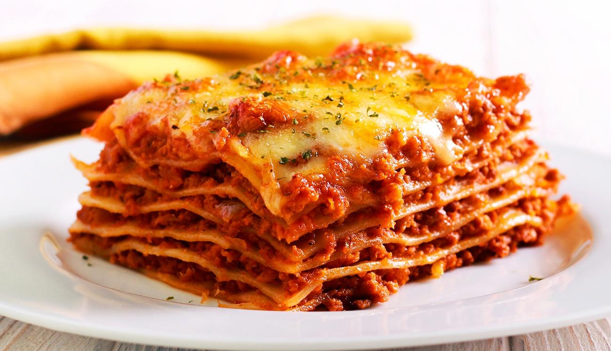
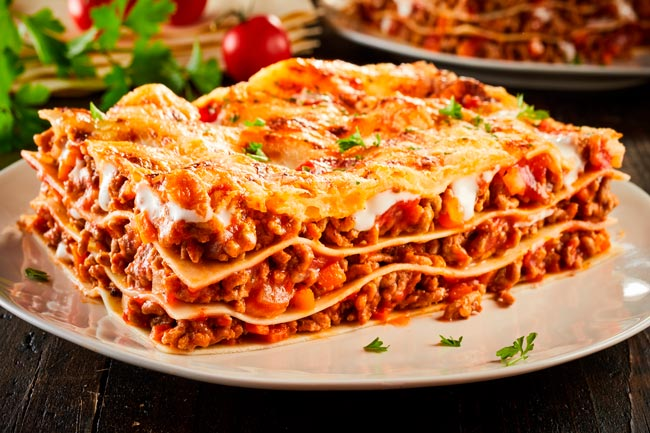
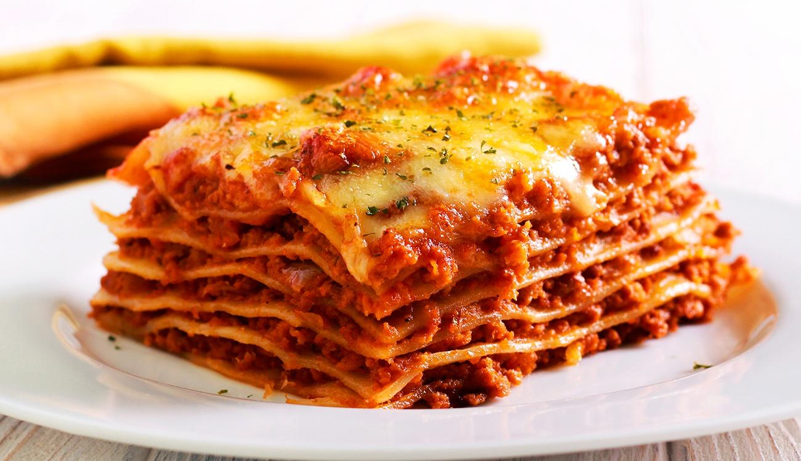
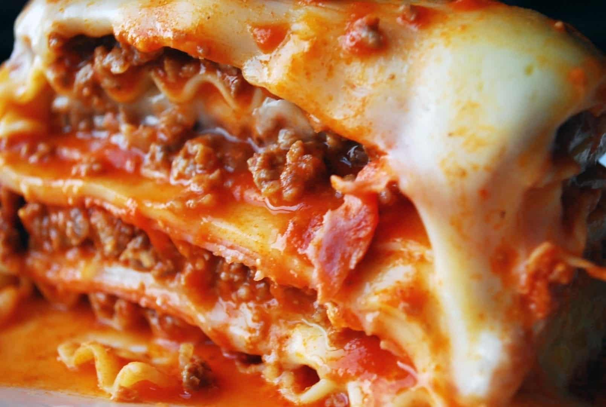
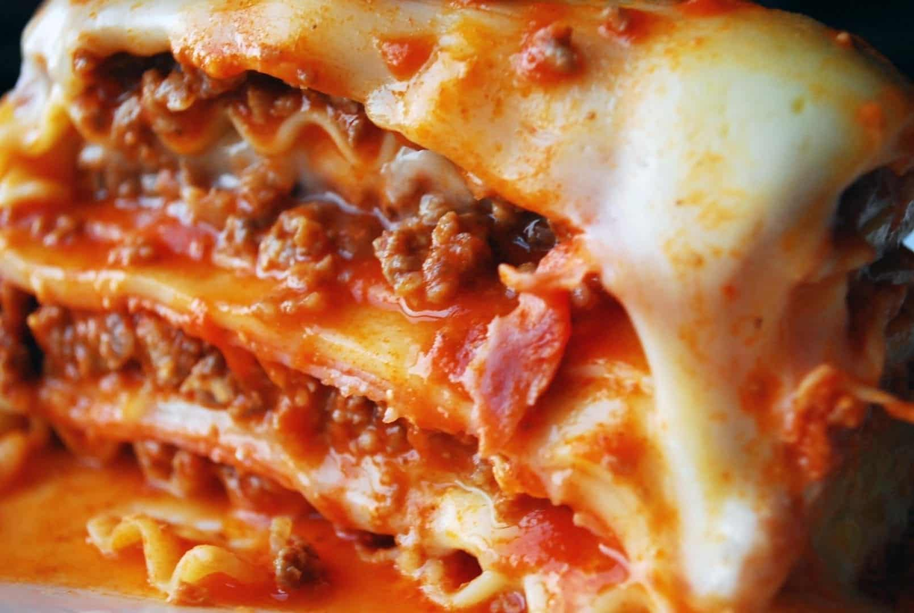

Lasanha a Bolonhesa
Ingredientes:
- 500 a 600g de carne moída
- 1 sachê de molho de tomate
- 1 cenoura pequena ralada
- 1/2 cebola picada
- 2 colheres de sopa de extrato de tomate
- 1 dente de alho picado
- Azeite
- Sal a gosto
- Salsinha e cebolinha a gosto
Modo de preparo:
- • Pique a cebola e o alho finamente.
- • Rale a cenoura.
- • Pique a salsinha e a cebolinha.
- • Em uma panela, aqueça um pouco de azeite em fogo médio.
- • Adicione a cebola picada e o alho, refogando até que fiquem dourados e aromáticos.
- • Acrescente a carne moída, mexendo bem para que ela cozinhe de maneira uniforme.
- • Quando a carne estiver bem dourada, adicione a cenoura ralada,>misturando bem.
- • Deixe cozinhar por alguns minutos até que os vegetais estejam levemente macios.
- • Adicione o sachê de molho de tomate e o extrato de tomate,mexendo para combinar todos os ingredientes.
- • Tempere com sal a gosto, lembrando que o molho de tomate já pode conter sal.
- • Reduza o fogo para médio-baixo, tampe a panela e deixe cozinhando por mais alguns minutos para que os sabores se incorporem.
- • Se necessário, ajuste o tempero.
- • Antes de servir, adicione a salsinha e a cebolinha picadas.
- • Mexa bem para distribuir os temperos frescos.
- • O molho de carne moída está pronto para ser servido.
Pode acompanhar massas, arroz ou ser utilizado em
outros pratos conforme sua preferência.


 



 
